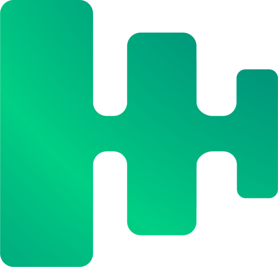

A Darede e a Pier Cloud estabeleceram uma parceria estratégica para potencializar os produtos e entregas de FinOps da Darede. Este material serve como um guia rápido para a revenda da ferramenta Pier Cloud, seja de forma standalone ou integrada a outros produtos Darede, destacando suas principais características sem ofuscar a atuação da Darede.
Introdução
Sobre a Pier Cloud
Visão Geral
A Pier Cloud é uma empresa brasileira especializada em soluções multicloud para FinOps, reconhecida como ISV Latam Partner of the Year. A empresa atua com foco em plataformas multicloud e on-premises, oferecendo um portfólio robusto de produtos para otimização de custos e gestão de recursos em nuvem.
Produtos da Plataforma FinOps
Lighthouse
Voltado para a prática e fundamentos de FinOps, oferece relatórios, visibilidade e dashboards customizáveis. Inclui funcionalidades de workspaces, chargeback, previsão de custos e detecção de anomalias.
CCA (Cloud Compliance Analysis)
Identifica oportunidades de otimização de custos através de regras personalizáveis, rightsizing, análise de RIs e SPs com baixo custo, e gestão de containers Kubernetes.
Autofix
Automação de práticas de FinOps com Tag Manager, auto tags, smart stop para desligamento inteligente de ambientes, start/stop programado e logs de auditoria.
Spot
Gestão e orquestração de máquinas spot com acompanhamento de preços médios, configurações globais de Smart spot e gerenciamento de Auto Scaling Groups.
 SP Manager
Gestão de compromissos e Saving Plans para AWS, com overview de ambientes, outlet para compras e visualização de informações dos planos e comprometimentos.
 Space
Space
Gestão da prática de FinOps com acompanhamento da jornada, programação de planos de ação e visualização de pontuações, lentes e capacidades.
Obs: Lighthouse, CCA, Autofix, Spot e Space são entregues em um único licenciamento. SP Manager possui licenciamento separado devido ao seu modelo específico.
A Relação Darede com a Pier Cloud
A Darede é a primeira parceira global da Pier Cloud, estabelecendo uma relação estratégica que vai além de uma simples revenda. Esta parceria permite:
- Influência direta no backlog de desenvolvimento da Pier
- Capacidade de levar soluções de FinOps a pequenas e médias empresas
- Integração dos serviços de FinOps da Darede com a plataforma Pier
- Suporte especializado e personalizado para clientes
Argumentos de Venda - Diferenciais da Pier Cloud
- Empresa Brasileira: ISV Latam Partner of the Year com conhecimento local
- Preço Acessível: Solução competitiva no mercado
- Suporte Darede: Integração com FinOps/SUST da Darede
- UX Simples e Fácil: Interface intuitiva e user-friendly
- Multicloud: Suporte a múltiplas plataformas de nuvem
- Recomendações Acionáveis: Insights práticos e implementáveis
- Gestão Constante: Monitoramento contínuo de custos
Diferenciais Técnicos vs Concorrência
- Visualização Centralizada: Multi-cloud em uma única interface
- Anomalias Avançadas: Comparação complexa com múltiplos períodos
- Identificação de Recursos: Anomalias com recursos específicos
- Importação de CSV: Comparação com forecast personalizado
- Organização Inteligente: Estruturação automática da empresa
- Dicionário de Tags: Normalização inteligente de dados
Diferenciais Darede na Parceria
- Primeira Parceira Pier do Mundo: Relacionamento privilegiado e estratégico
- Influência no Roadmap: Participação ativa no desenvolvimento de novas funcionalidades
- Foco em PMEs: Especialização em levar soluções enterprise para pequenas e médias empresas
- Serviços Agregados: Consultoria e serviços de FinOps da Darede integrados à plataforma
- Suporte Especializado: Equipe técnica qualificada e certificada